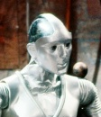
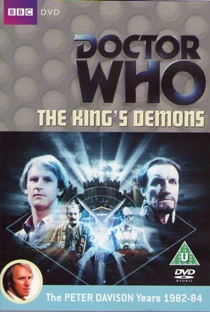
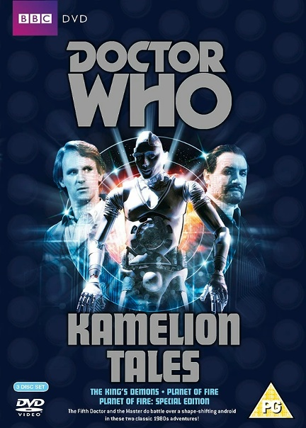
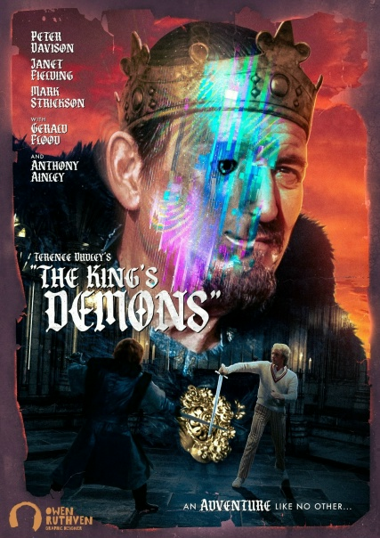

Эра Пятого Доктора (20 сезон)
<<< НАЗАД ||| 6. Королевские демоны ||| ДАЛЬШЕ >>>
Субтитры: Русские и Английские |  |
|---|---|
с фанатским обновлением визуальных эффектов (cunningmunki) Субтитры: Русские и Английские | |
с обновлением визуальных эффектов (cunningmunki) Субтитры: отсутствуют | над серией] |
The King's Demons
Дата выхода: 15-16 марта 1983
Формат: 2 эпизода по 25 мин.
 |  |  помощник |
ТАРДИС материализуется в Англии 1215 года, при дворе короля Иоанна Безземельного. Король ведёт себя странно — мучает гостей и грозится не подписать Великую хартию вольностей. Доктор быстро понимает, что перед ним не настоящий король, а кибер-андроид Камелион, которым управляет Мастер, скрывающийся под видом французского посланника. Цель Мастера — сорвать подписание хартии и изменить ход истории.
Мастер вернулся впервые со «Временного полёта». Камелион — второй робот-спутник в истории сериала после K-9. Робот был реальным, на радиоуправлении, но настолько капризным в работе, что продюсеры почти не использовали его в следующих сериях. А двухсерийный формат выбрали из-за сокращённого бюджета — 20-й сезон был на серию короче обычного.
 VHS+Boxset - ноябрь 1995 |   DVD+Boxset - 14 июня 2010 |  Blu-ray - 18 сентября 2023 * Версия в нашей группе |
|---|



Трейлер: